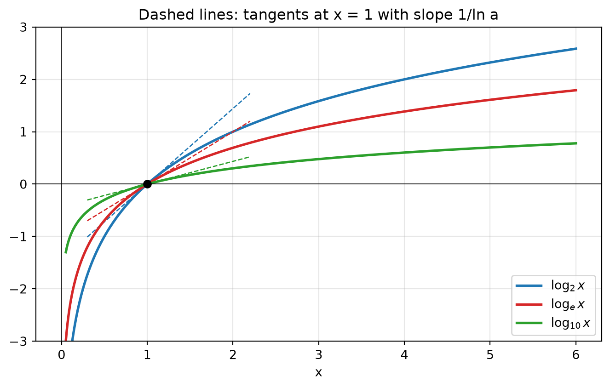
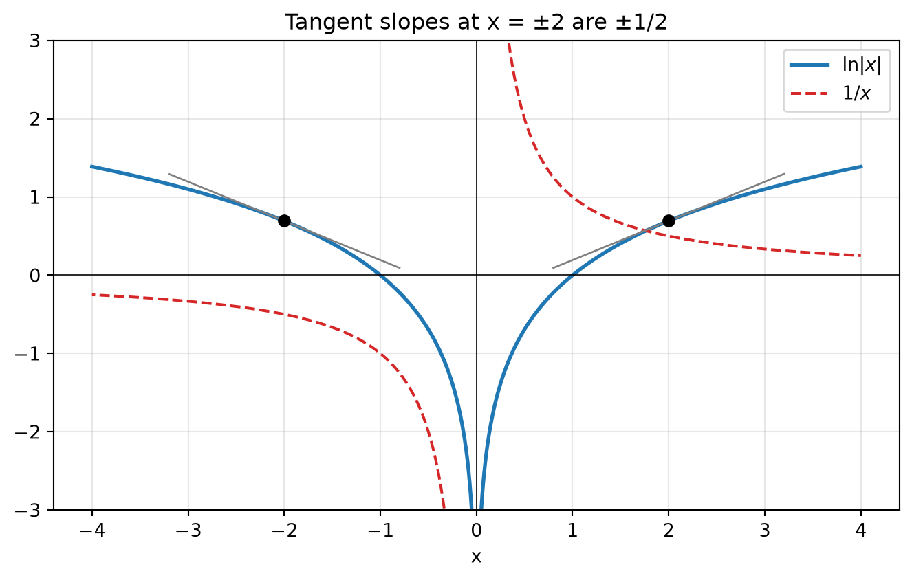
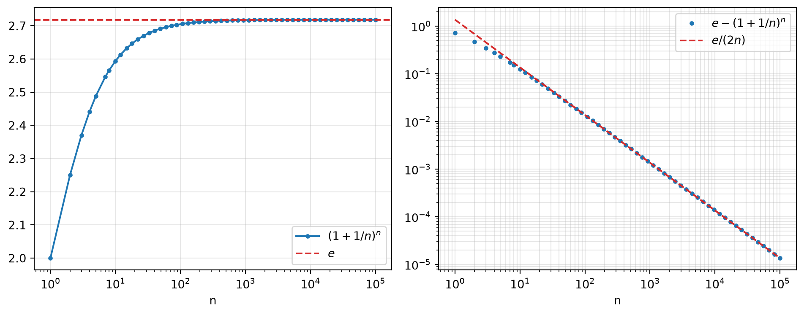

flowchart LR A["a^y = x"] --> B["Implicit differentiation<br/>uses (a^x)' = a^x ln a"] B --> C["(log_a x)' = 1/(x ln a)"] C --> D["a = e:<br/>(ln x)' = 1/x"] D --> E["Chain rule:<br/>(ln g)' = g'/g"] E --> F["ln|x| and ln|g|"] F --> G["Logarithmic<br/>differentiation"] D --> H["(ln x)' at x = 1 equals 1"] H --> I["lim ln(1+x)/x = 1"] I --> J["e = lim (1+x)^(1/x)<br/>e^x = lim (1+x/n)^n"]
Differentiation Rule: Derivatives of Logarithmic Functions
Invert the exponential, normalize the base, and let logarithms turn products into sums
A logarithm is the inverse of an exponential, so its derivative comes from one implicit differentiation of \(a^y = x\). Everything else in this note follows from three facts. First, the derivative \(1/(x\ln a)\) carries a constant factor that disappears exactly when \(a=e\). Second, the chain rule turns \(\ln g\) into the relative rate \(g'/g\), and this survives absolute values. Third, the logarithm converts products, quotients and powers into sums, which is what makes logarithmic differentiation work. The same derivative at \(x=1\) also produces the classical limit formulas for \(e\).
1 The Derivative of \(\log_a x\)
1.1 Derivation by implicit differentiation
Let \(a>0\), \(a\neq 1\), and \(y=\log_a x\) for \(x>0\). By definition, \[ a^y = x. \] Assume \(y\) is a differentiable function of \(x\) (this is justified by the inverse function theorem, since \(a^y\) is differentiable with nonzero derivative \(a^y\ln a\)). Differentiate both sides with respect to \(x\), using \(\frac{d}{dx}a^x = a^x\ln a\) and the chain rule: \[ a^y(\ln a)\,\frac{dy}{dx} = 1 \quad\Longrightarrow\quad \frac{dy}{dx} = \frac{1}{a^y\ln a} = \frac{1}{x\ln a}. \]
ImportantResult 1
\[ \frac{d}{dx}\log_a x = \frac{1}{x\ln a}, \qquad x>0. \] Write the denominator as \(x\ln a\), never as “\(\ln a\,x\)”, which reads as \(\ln(ax)\).
1.2 Derivation by change of base
Since \(\log_a x = \dfrac{\ln x}{\ln a}\) and \(\ln a\) is a constant, \[ \frac{d}{dx}\log_a x = \frac{1}{\ln a}\cdot\frac{d}{dx}\ln x = \frac{1}{x\ln a}. \] This route is shorter, but it depends on already knowing \((\ln x)' = 1/x\). The implicit route depends only on the exponential derivative. Keep track of which fact is proved from which; the dependency order matters again in the section on \(e\).
1.3 A structural observation: every logarithm is a rescaled \(\ln\)
Change of base says \(\log_a x = (1/\ln a)\ln x\). So all logarithm functions have the same shape and differ only by a vertical scale factor. Their derivatives differ by the same factor. In particular the slope at \(x=1\) is \(1/\ln a\), and it equals \(1\) precisely when \(a=e\).

2 The Natural Logarithm
2.1 Result
Putting \(a=e\) in Result 1 and using \(\ln e = 1\):
ImportantResult 2
\[ \frac{d}{dx}\ln x = \frac{1}{x}, \qquad x>0. \]
2.2 Why calculus prefers base \(e\)
The precise statement is not “with \(\ln\) we can ignore the base”. The base is still \(e\). The point is that the derivative formula carries no extra constant factor \(1/\ln a\), because \(\ln e = 1\). The exponential side says the same thing: \(\frac{d}{dx}a^x = a^x\ln a\) reduces to \(\frac{d}{dx}e^x = e^x\).
Three equivalent ways to characterize \(e\) by this normalization:
| Viewpoint | Characterization of \(e\) |
|---|---|
| Exponential | the unique base with \(\displaystyle\lim_{h\to0}\frac{a^h-1}{h}=1\), i.e. slope of \(a^x\) at \(x=0\) equals \(1\) |
| Logarithm | the unique base with slope of \(\log_a x\) at \(x=1\) equal to \(1\) |
| Scaling | the base for which \(\log_a x\) needs no rescaling to have derivative \(1/x\) |
The first two are mirror images: the graphs of \(a^x\) and \(\log_a x\) are reflections across \(y=x\), which swaps the point \((0,1)\) with \((1,0)\) and turns a slope \(m\) into \(1/m\). Slope \(1\) is the fixed point of that reciprocal.
2.3 Writing derivatives as equalities between functions
A common notational slip is writing “\(\log_e x = \ln x = \dfrac1x\)”. The first equality is between functions, the second confuses a function with its derivative. The correct chain is \[ \frac{d}{dx}\log_e x = \frac{d}{dx}\ln x = \frac{1}{x}. \]
3 Combining with the Chain Rule
3.1 The logarithmic derivative
If \(u=g(x)\) is differentiable and \(g(x)>0\), the chain rule gives
ImportantResult 3
\[ \frac{d}{dx}\ln u = \frac{1}{u}\frac{du}{dx}, \qquad\text{equivalently}\qquad \frac{d}{dx}\ln g(x) = \frac{g'(x)}{g(x)}. \]
The quantity \(g'/g\) is the relative rate of change of \(g\): the rate of change per unit of current size. Taking a logarithm converts absolute change into relative change. This is the calculus behind percentage changes, growth rates, and decibels.
3.2 Two standard shapes
- Logarithm outside: \(\dfrac{d}{dx}\ln(\text{inner}) = \dfrac{(\text{inner})'}{\text{inner}}\).
- Logarithm inside: for \(\sqrt{\ln x}\), the outer function is the square root, giving \(\dfrac{1}{2\sqrt{\ln x}}\cdot\dfrac1x\).
For a nested logarithm such as \(\ln\ln\ln x\), each layer contributes one factor: \[ \frac{d}{dx}\ln\ln\ln x = \frac{1}{\ln\ln x}\cdot\frac{1}{\ln x}\cdot\frac{1}{x}, \] and the domain is found from the innermost condition outward: \(\ln\ln x>0 \iff \ln x>1 \iff x>e\).
4 The Absolute Value: \(\ln|x|\)
4.1 Derivation
\(\ln|x|\) is defined for every \(x\neq 0\). Split by sign: \[ \ln|x| = \begin{cases} \ln x, & x>0,\\[2pt] \ln(-x), & x<0. \end{cases} \] For \(x>0\) the derivative is \(1/x\). For \(x<0\) the chain rule gives \[ \frac{d}{dx}\ln(-x) = \frac{1}{-x}\cdot(-1) = \frac{1}{x}. \]
ImportantResult 4
\[ \frac{d}{dx}\ln|x| = \frac{1}{x}, \qquad x\neq 0, \qquad\qquad \frac{d}{dx}\ln|g(x)| = \frac{g'(x)}{g(x)}, \qquad g(x)\neq 0. \]
4.2 Why no case split is needed afterward
The general form follows from Result 4 and the chain rule. The sign of \(g\) cancels between numerator and denominator, so a single formula covers both signs. For example, \[ \frac{d}{dx}\ln|\cos x| = \frac{-\sin x}{\cos x} = -\tan x \] wherever \(\cos x\neq0\). Splitting into \(\cos x>0\) and \(\cos x<0\) is only necessary when differentiating \(|\cos x|\) itself, not its logarithm.
Geometrically, \(\ln|x|\) is even, so its derivative must be odd; \(1/x\) is odd. The two branches are mirror images and have opposite slopes at \(\pm x\).

5 Simplify Before Differentiating
5.1 Laws of logarithms as a differentiation tool
Using \[ \ln(AB)=\ln A+\ln B,\qquad \ln\frac{A}{B}=\ln A-\ln B,\qquad \ln A^r = r\ln A \] before differentiating replaces product and quotient rules with sums. Compare two routes for \[ H(z)=\frac12\ln\frac{a^2-z^2}{a^2+z^2}. \]
- Quotient route. Chain rule on the whole quotient requires a quotient derivative and a careful cancellation. It is easy to cancel one factor of \((a^2+z^2)\) too many.
- Split route. \[ H=\tfrac12\ln(a^2-z^2)-\tfrac12\ln(a^2+z^2) \;\Rightarrow\; H'=\frac{-z}{a^2-z^2}-\frac{z}{a^2+z^2}=\frac{-2a^2z}{a^4-z^4}. \]
Similar one-line simplifications:
| Function | Rewrite | Derivative |
|---|---|---|
| \(\ln\sqrt[5]{x}\) | \(\tfrac15\ln x\) | \(\dfrac{1}{5x}\) |
| \(\log_5(xe^x)\) | \(\dfrac{\ln x + x}{\ln 5}\) | \(\dfrac{1}{\ln 5}\left(\dfrac1x+1\right)\) |
| \(\ln(e^{-x}+xe^{-x})\) | \(-x+\ln(1+x)\) | \(\dfrac{-x}{1+x}\) |
| \(\ln\!\left(x\sqrt{x^2-1}\right)\) | \(\ln x+\tfrac12\ln(x^2-1)\) | \(\dfrac{2x^2-1}{x(x^2-1)}\) |
| \(2x\log_{10}\sqrt{x}\) | \(x\log_{10}x\) | \(\log_{10}x+\dfrac{1}{\ln 10}\) |
| \(\ln\!\left(x+\sqrt{x^2-1}\right)\) | (no split) | \(\dfrac{1}{\sqrt{x^2-1}}\) |
The last entry is \(\cosh^{-1}x\), the inverse hyperbolic cosine.
5.2 The domain caveat when splitting
Log laws hold as identities only where every logarithm on both sides is defined. Splitting can silently shrink the domain. Consider \[ F(t)=\ln\frac{(2t+1)^3}{(3t-1)^4}. \] Since \((3t-1)^4>0\) whenever \(t\neq\tfrac13\), the domain is \(t>-\tfrac12,\ t\neq\tfrac13\). Writing \(4\ln(3t-1)\) requires \(3t-1>0\) and loses the interval \(-\tfrac12<t<\tfrac13\). The correct split uses an absolute value: \[ F(t)=3\ln(2t+1)-4\ln|3t-1|, \qquad F'(t)=\frac{6}{2t+1}-\frac{12}{3t-1}. \] Result 4 makes the derivative formula identical, which is why the slip is invisible in the final answer but matters for the stated domain.
6 Logarithmic Differentiation
6.1 The procedure
For \(y\) built from products, quotients and powers:
- Take \(\ln|\cdot|\) of both sides.
- Expand with the laws of logarithms.
- Differentiate implicitly with respect to \(x\); the left side becomes \(y'/y\).
- Multiply by \(y\) and substitute the original expression.
6.2 Why it works
The logarithm is a homomorphism from multiplication to addition. For \[ y=\prod_{i} f_i(x)^{\alpha_i} \quad\Longrightarrow\quad \ln|y|=\sum_i \alpha_i\ln|f_i(x)| \quad\Longrightarrow\quad \frac{y'}{y}=\sum_i \alpha_i\frac{f_i'(x)}{f_i(x)}. \] The relative rate of a product is the weighted sum of the relative rates of its factors. The product rule and quotient rule are special cases of this identity.
6.3 Why \(\ln|y|\) rather than \(\ln y\)
\(y\) may be negative on parts of its domain, for example \((2x+1)^5(x^4-3)^6\) for \(x<-\tfrac12\), or anything containing \(\sin x\) or \(\tan x\). There \(\ln y\) is undefined, while \(\ln|y|\) is fine. Result 4 guarantees the computation is unchanged, which is why many worked solutions omit the bars. Where \(y=0\) the method does not apply at all; those points must be checked directly from the original function.
6.4 Variable base and variable exponent
For \(y=f(x)^{g(x)}\) with \(f(x)>0\), neither the power rule nor the exponential rule applies. Logarithmic differentiation gives \[ \ln y = g\ln f \quad\Longrightarrow\quad y' = f^{g}\left(g'\ln f + g\,\frac{f'}{f}\right). \] Equivalently \(y=e^{g\ln f}\). The domain requires \(f>0\), since a real power with a non-integer exponent of a negative number is undefined.
The structure is revealing. The two terms are exactly what one would get by treating the exponent as constant (power rule: \(g f^{g-1} f'\)) and by treating the base as constant (exponential rule: \(f^g \ln f\cdot g'\)), then adding them. For \(y=x^x\):
| Treat as | Rule | Contribution |
|---|---|---|
| exponent frozen | power rule | \(x\cdot x^{x-1} = x^x\) |
| base frozen | exponential rule | \(x^x\ln x\) |
| both vary | sum | \(x^x(\ln x + 1)\) |
This “differentiate each slot separately and add” pattern is a first appearance of the multivariable chain rule.
Further instances: \[ \begin{aligned} \frac{d}{dx}x^{\cos x} &= x^{\cos x}\left(\frac{\cos x}{x}-\sin x\ln x\right),\\ \frac{d}{dx}(\cos x)^{x} &= (\cos x)^{x}\left(\ln\cos x - x\tan x\right),\\ \frac{d}{dx}(\tan x)^{1/x} &= (\tan x)^{1/x}\left(-\frac{\ln\tan x}{x^2}+\frac{2}{x\sin 2x}\right),\\ \frac{d}{dx}(\sin x)^{\ln x} &= (\sin x)^{\ln x}\left(\frac{\ln\sin x}{x}+\ln x\cot x\right). \end{aligned} \] In the third line, \(\dfrac{\sec^2x}{\tan x}=\dfrac{1}{\sin x\cos x}=\dfrac{2}{\sin 2x}\).
7 Implicit Differentiation with Logarithms
When \(y\) appears inside a logarithm, every term containing \(y\) produces a factor \(y'\).
Example 1. \(x^y=y^x\) with \(x,y>0\). Take logarithms: \(y\ln x = x\ln y\). Differentiate both sides, each by the product rule: \[ y'\ln x+\frac{y}{x} = \ln y + \frac{x}{y}\,y'. \] Collect the \(y'\) terms: \[ y'=\frac{\ln y-\dfrac{y}{x}}{\ln x-\dfrac{x}{y}}=\frac{xy\ln y-y^2}{xy\ln x-x^2}. \] The frequent error is writing \(\frac{x}{y}\) instead of \(\frac{x}{y}y'\) on the right.
Example 2. \(y=\ln(x^2+y^2)\). The chain rule gives \[ y'=\frac{2x+2yy'}{x^2+y^2}. \] Clear the denominator first, then collect: \[ (x^2+y^2)\,y' = 2x+2yy' \quad\Longrightarrow\quad y'=\frac{2x}{x^2+y^2-2y}. \] Collecting before clearing tends to leave a stray factor of \(1/(x^2+y^2)\).
8 Higher Derivatives
8.1 A closed form for \(\ln(x-1)\)
Let \(f(x)=\ln(x-1)\). Then \(f'=(x-1)^{-1}\), \(f''=-(x-1)^{-2}\), \(f'''=2(x-1)^{-3}\), and in general \[ f^{(n)}(x)=(-1)^{n+1}\,(n-1)!\,(x-1)^{-n},\qquad n\ge1. \] Proof by induction. The case \(n=1\) holds. If it holds for \(n\), differentiating \((x-1)^{-n}\) multiplies by \(-n\): \[ f^{(n+1)}(x)=(-1)^{n+1}(n-1)!\,(-n)(x-1)^{-n-1}=(-1)^{n+2}\,n!\,(x-1)^{-(n+1)}. \] The single factor \(-n\) updates the sign and the factorial at the same time.
8.2 \(\dfrac{d^{\,n+1}}{dx^{n+1}}\big(x^n\ln x\big)=\dfrac{n!}{x}\)
Claim. For every integer \(n\ge0\), \(D^{n+1}(x^n\ln x)=n!/x\), where \(D=d/dx\).
Proof by induction. For \(n=0\), \(D\ln x = 1/x\). Assume the claim for \(n-1\). Since \[ D(x^n\ln x)=n x^{n-1}\ln x + x^{n-1}, \] and \(x^{n-1}\) is a polynomial of degree \(n-1\), it is annihilated by \(D^n\). Therefore \[ D^{n+1}(x^n\ln x)=D^n\big(n x^{n-1}\ln x\big)+D^n\big(x^{n-1}\big) = n\cdot\frac{(n-1)!}{x}+0=\frac{n!}{x}. \] For \(n=8\) this gives \(\dfrac{d^9}{dx^9}(x^8\ln x)=\dfrac{8!}{x}\). The mechanism: each differentiation lowers the power of \(x\) in front of \(\ln x\), the polynomial debris dies after enough derivatives, and the last derivative falls on \(\ln x\) itself.
9 \(e\) as a Limit
9.1 Logical order
The direction of proof is: \[ (\ln x)'=\frac1x \;\Longrightarrow\; \lim_{x\to0}\frac{\ln(1+x)}{x}=1 \;\Longrightarrow\; \lim_{x\to0}(1+x)^{1/x}=e \;\Longrightarrow\; \lim_{n\to\infty}\left(1+\frac1n\right)^n=e. \] Using any later statement to prove an earlier one is circular.
9.2 Step 1: the derivative of \(\ln\) at \(1\)
Let \(f(x)=\ln x\). By the definition of the derivative and Result 2, \[ \lim_{x\to0}\frac{\ln(1+x)}{x}=\lim_{x\to0}\frac{\ln(1+x)-\ln 1}{x}=f'(1)=\frac{1}{1}=1. \] The proof ends here. Evaluating \(f'(1)\) by the formula \(1/x\) is the whole argument.
WarningCircular reasoning trap
Rewriting \(\dfrac{\ln(1+x)}{x}=\ln(1+x)^{1/x}\) and then invoking \((1+x)^{1/x}\to e\) to conclude \(\ln e=1\) assumes the very limit that this step is used to establish.
9.3 Step 2: the limit for \(e\)
From Step 1, \(\ln\!\big((1+x)^{1/x}\big)=\dfrac{\ln(1+x)}{x}\to1\). Since \(\exp\) is continuous, \[ (1+x)^{1/x}=\exp\!\left(\frac{\ln(1+x)}{x}\right)\to e^1=e \qquad(x\to0). \] Restricting to \(x=1/n\) with \(n\to\infty\): \[ e=\lim_{n\to\infty}\left(1+\frac1n\right)^n. \]
9.4 Step 3: \(e^x\) as a limit
For fixed \(x\neq0\) and large \(n\) (so that \(1+x/n>0\)), \[ n\ln\!\left(1+\frac{x}{n}\right) = x\cdot\frac{\ln(1+x/n)}{x/n}\;\longrightarrow\; x\cdot 1, \] because \(x/n\to0\) and Step 1 applies. By continuity of \(\exp\), \[ \lim_{n\to\infty}\left(1+\frac{x}{n}\right)^n=e^x. \] This argument works for every real \(x\), negative included, and needs neither a substitution \(m=n/x\) (which would not be an integer) nor the continuity of \(u\mapsto u^x\).
9.5 How fast is the convergence?
Expanding \(\ln(1+h)=h-\tfrac{h^2}{2}+\tfrac{h^3}{3}-\cdots\) with \(h=1/n\), \[ n\ln\!\left(1+\frac1n\right)=1-\frac{1}{2n}+\frac{1}{3n^2}-\cdots \quad\Longrightarrow\quad \left(1+\frac1n\right)^n\approx e\left(1-\frac{1}{2n}\right). \] The error decays only like \(e/(2n)\): one more correct digit costs ten times as many compounding steps.

10 Connection: Logarithmic Derivatives in Link Budgets
Decibels are logarithms, so their derivatives are relative rates. With Result 1 and \(a=10\), \[ \frac{d}{dP}\,10\log_{10}P=\frac{10}{P\ln10}\approx\frac{4.343}{P} \quad\Longrightarrow\quad \Delta P_{\mathrm{dB}}\approx 4.343\,\frac{\Delta P}{P}. \] A \(1\%\) change in linear power is about \(0.043\) dB, regardless of the power level.
For Shannon capacity \(C=B\log_2(1+\gamma)\), \[ \frac{dC}{d\gamma}=\frac{B}{(1+\gamma)\ln 2}, \] which decays like \(1/\gamma\): diminishing returns in linear SNR. Measured per decibel instead, with \(\gamma=10^{\gamma_{\mathrm{dB}}/10}\) and \(\frac{d\gamma}{d\gamma_{\mathrm{dB}}}=\frac{\gamma\ln10}{10}\), \[ \frac{dC}{d\gamma_{\mathrm{dB}}}=\frac{B\ln 10}{10\ln 2}\cdot\frac{\gamma}{1+\gamma} \;\xrightarrow{\;\gamma\to\infty\;}\; \frac{B\ln10}{10\ln2}\approx 0.332\,B. \] At high SNR, every \(3\) dB adds about \(0.997\,B\approx B\) bits per second: the familiar “one bit per hertz per 3 dB” rule, read directly off a logarithmic derivative.
11 Self-Check Toolkit
- Sign and monotonicity. \(\ln\) is increasing, so \((\ln g)'\) has the sign of \(g'\) where \(g>0\).
- Parity. \(\ln|x|\) and \(\ln|g|\) with \(g\) even are even, so their derivatives must be odd.
- Special value. Evaluate at a convenient point, often \(x=1\) where \(\ln 1=0\), and compare with a difference quotient.
- Homogeneity. In \(H'(z)\) above, \(H\) is dimensionless, so \(H'\) must scale like \(1/z\); \(\frac{-2a^2z}{a^4-z^4}\) does, while \(\frac{-2a^2z}{a^2-z^2}\) does not.
- Two routes. Differentiate once directly and once after splitting with log laws; the results must agree after simplification.
- Domain transcription. After finding conditions such as \(x\neq e+1\), copy them into the final interval notation literally: \((1,\,e+1)\cup(e+1,\,\infty)\).
12 Common Pitfalls
| Pitfall | Correct statement |
|---|---|
| Writing \(\frac{1}{\ln a\,x}\) | \(\dfrac{1}{x\ln a}\) |
| \(\ln x = \frac1x\) | \(\dfrac{d}{dx}\ln x = \dfrac1x\) |
| Over-cancelling in a quotient inside \(\ln\) | Split with log laws before differentiating |
| \(4\ln(3t-1)\) from \(\ln(3t-1)^4\) | \(4\ln\lvert 3t-1\rvert\); even powers need absolute values |
| Using \(\ln y\) when \(y\) can be negative | Use \(\ln\lvert y\rvert\); the derivative is unchanged |
| Case-splitting \(\frac{d}{dx}\ln\lvert\cos x\rvert\) by sign | \(\dfrac{u'}{u}\) holds for both signs |
| Missing \(y'\) in \(\frac{d}{dx}(x\ln y)\) | \(\ln y + \dfrac{x}{y}\,y'\) |
| Collecting \(y'\) before clearing denominators | Multiply through by the denominator first |
| Proving \(\lim\frac{\ln(1+x)}{x}=1\) via \((1+x)^{1/x}\to e\) | Evaluate \((\ln x)'\) at \(x=1\); the \(e\)-limit is a consequence |
| Treating \(x^x\) with the power rule or the exponential rule alone | Use \(e^{x\ln x}\); the derivative is the sum of both contributions |